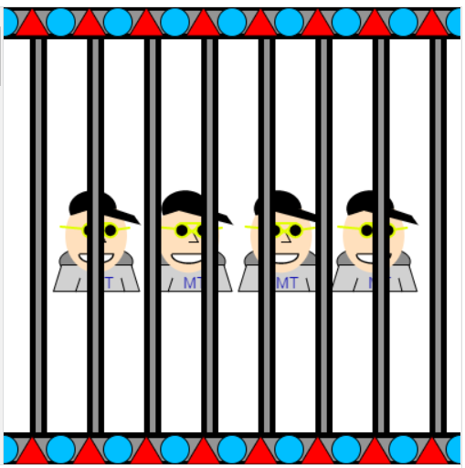
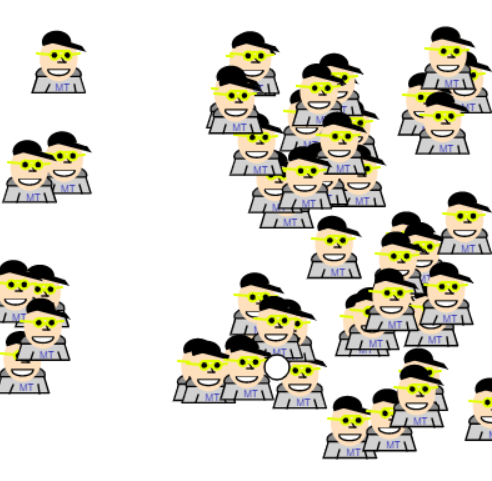
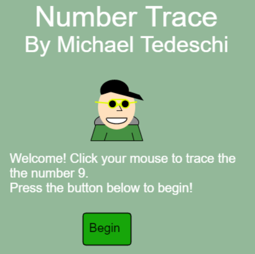
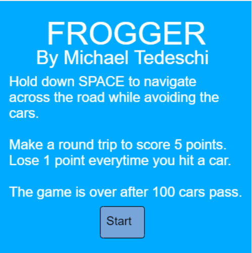

Here you can find some of my JavaScript programs created during my time in CSC106. JavaScript is a programming language that is mainly used to give web sites more
style and interactivity for the user! It enables a lot more advanced capabilities for a web site rather than simply using HTML and CSS.
Stay tuned for some interesting projects on here!
tedeschi_bitmoji |
tedeschi_dancingBitmoji |
tedeschi_racingBitmoji |
tedeschi_dancingBitmojiFun |
tedeschi_racingBitmojiFun |
tedeschi_resizeBitmoji |
tedeschi_Follow |
tedeschi_decision |
Zoo |
Tag Game |
Number Tracer |
Frogger |